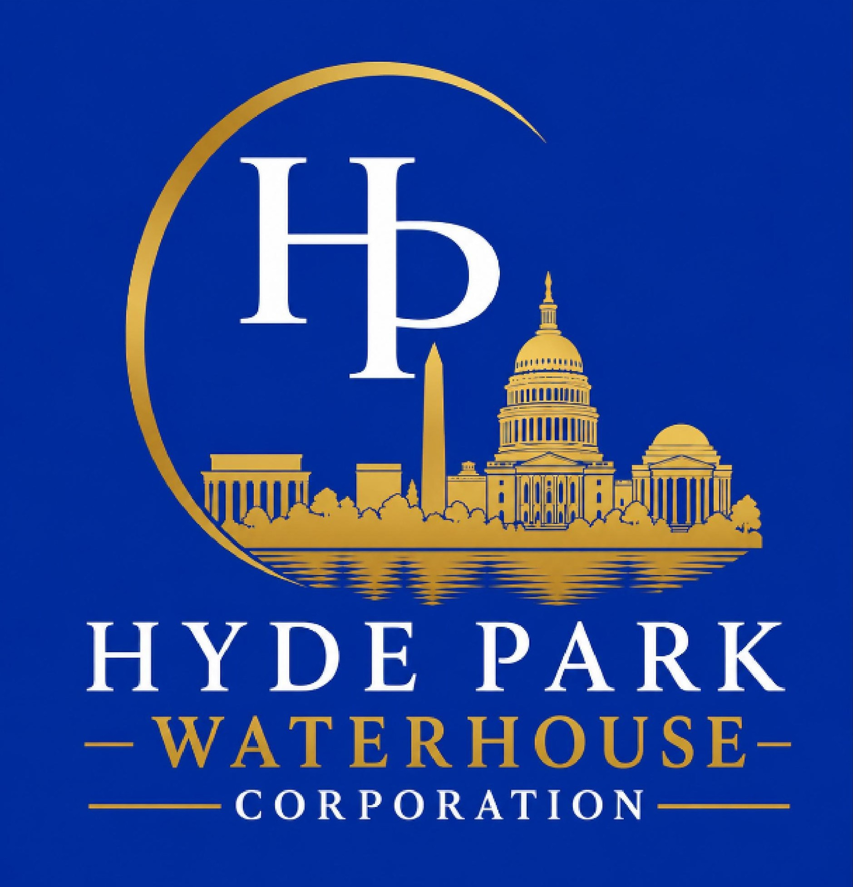

Hyde Park Waterhouse
Corporation
Disaster Relief | Emergency Response | Infrastructure Recovery | Logistics Support | Facilities Services
Corporate Offices:
Address: 1606Rocksorings Blvd,
Shreveport, Louisiana 71119
Phone: (762) 930-6686
Augusta Office:
1602 Johns Road, Suite A,
Augusta, Georgia 30904
Phone:(000) 000-0000